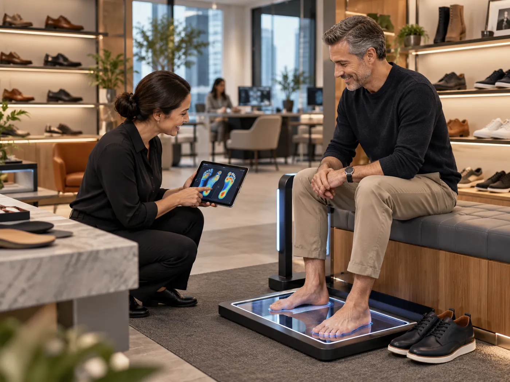

Service · Insights
Helping without pressure: the S.E.R.V.E. conversation

Customers can feel pressure instantly. The S.E.R.V.E. method keeps the conversation about them, so the recommendation feels earned rather than pushed.
- See the person: welcome them, notice without assuming and ask permission before you act.
- Explore what matters: ask one open question at a time, such as "What do you need your shoes to help you do comfortably?"
- Reflect and confirm: summarise their priority in their words and ask "Have I got that right?"
- Validate the fit: measure, scan if available, then let them walk and compare.
- Empower the next step: recommend clearly and leave the choice with them, including time to think.
The promise behind the method is simple: help the customer make a confident, informed choice, and never pressure them into one.
General information for footwear and front-of-house teams. It is not medical advice; anyone with foot pain or a health concern should see a qualified clinician.
Learn this properly, step by step.The Certified Fit Specialist pathway turns these ideas into practice. Stage 1 starts free.
Explore the courses
Explore the courses